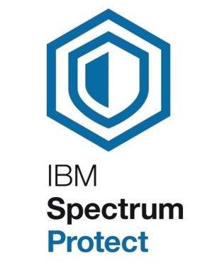
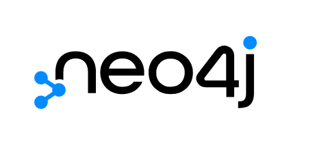

My Work
I have professional work experience at a variety of employers and have worked in software development, web development, and data analytics. I am always open to new opportunites so feel free to reach me at rajchan@umich.edu!
Blue Cross Blue Shield of Michigan
At BCBSM I mainly focused on data analytics. Below is a diagram for a program I created during my time as a data analytics intern. It is a word cloud generator that takes in IT reports and generates a relevant word cloud in Tableau using Python and Excel.
Project Diagram
Technologies


University of Michigan Information & Technology Services
At UM ITS I mainly developed Python scripts for the ITS Storage Team. I also created a knowledge graph database to analyze donor information for the Office of University Development. In-depth diagrams of both projects are showcased below.
Project Diagrams
Technologies


TekZenith Solutions
At TekZenith Solutions I helped to develop and maintain the company's website.
Technologies